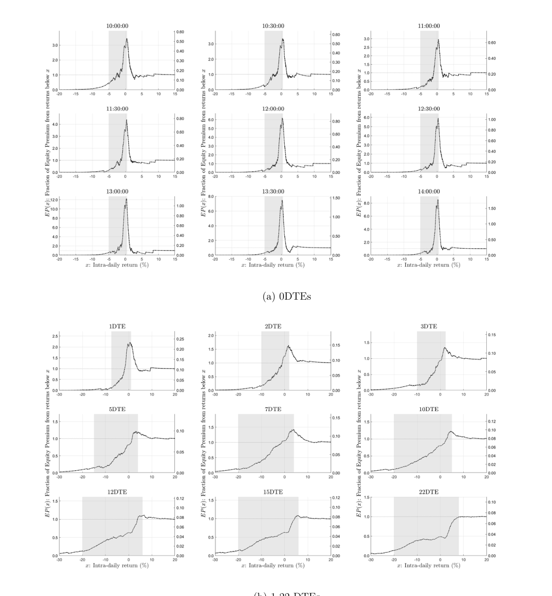
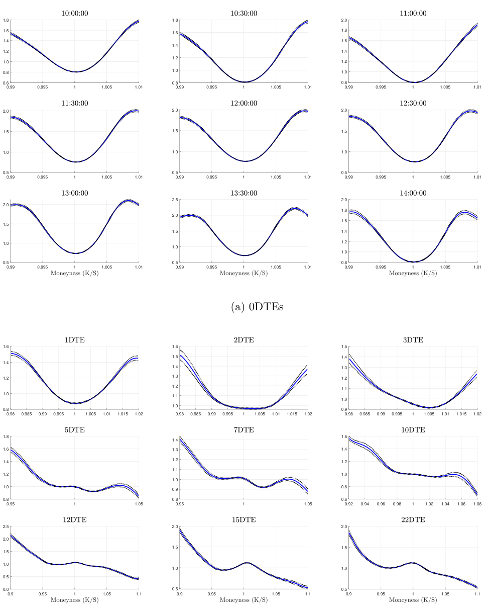

0DTE Asset Pricing จากศูนย์
เปเปอร์นี้ไม่ได้ถามว่าเทรด 0DTE ยังไง แต่ถามว่า “ราคาของ 0DTE option บอกอะไรเกี่ยวกับความกลัว ความต้องการประกัน และผลตอบแทนที่นักลงทุนเรียกร้องระหว่างวัน”
คำตอบสั้นของ paper
0DTE options ให้ภาพ asset pricing ที่ต่างจาก option อายุยาว: นักลงทุนดูเหมือนยอมจ่ายแพงไม่ใช่แค่เพื่อกันตลาดลง แต่ยังเพื่อกันตลาดขึ้นแรงด้วย ความเสี่ยงฝั่ง upside จึงมี compensation สูงมากใน 0DTE และ pricing kernel มีรูป U-shape ชัดเจน โดยเฉพาะช่วงหมดอายุภายในวันเดียว
1. Asset pricing แปลว่าอะไร
asset pricing คือการถามว่า “ราคานี้ชดเชยความเสี่ยงอะไรอยู่” ถ้าของหนึ่งจ่ายเงินตอนโลกแย่ คนมักยอมจ่ายแพง เพราะมันเป็นประกัน ถ้าของหนึ่งจ่ายเงินตอนโลกดี คนอาจไม่ต้องการจ่ายแพง เพราะโลกดีอยู่แล้ว
แต่ paper นี้พบสิ่งแปลกสำหรับ 0DTE: option price บอกว่านักลงทุนยอมจ่ายสูงมากสำหรับ payoff ตอนตลาดขึ้นแรงระหว่างวันด้วย ไม่ใช่แค่ตอนตลาดลงแรง
2. สามคำที่ต้องเข้าใจก่อน
Physical distribution
ภาพความน่าจะเป็นจากข้อมูลจริงในอดีต เช่น S&P 500 ระหว่าง 10:00 ถึงปิดตลาดมักขึ้นหรือลงเท่าไร
Risk-neutral distribution
ภาพความน่าจะเป็นที่ reverse-engineer จากราคา option ไม่ใช่ความเชื่อจริงตรง ๆ แต่เป็นความน่าจะเป็นที่ถูกบิดด้วย risk premium
Pricing kernel
ตัวบอกว่า market ให้ “น้ำหนักราคา” กับ state ไหนมากกว่าความน่าจะเป็นจริง ถ้า state หนึ่งแพงกว่าที่ historical probability บอก แปลว่าคนน่าจะอยากประกัน state นั้น
จำภาพง่าย ๆ: physical distribution คือ “โลกจริงเกิดบ่อยแค่ไหน” ส่วน risk-neutral distribution คือ “ตลาด option กำลังตั้งราคาเหมือนให้ความสำคัญกับโลกนั้นแค่ไหน” pricing kernel คือช่องว่างระหว่างสองภาพนี้
3. ทำไม 0DTE สำคัญ
ตั้งแต่ CBOE ทำให้ weekly options มีครบทุกวันซื้อขาย 0DTE กลายเป็น maturity ที่ volume สูงมาก Paper ใช้ S&P 500 0DTE หลายเวลาระหว่างวัน เช่น 10:00, 10:30, 11:00 ไปจน 14:00 แล้วดู payoff ถึง market close

4. ผลหลักที่ 1: call returns แย่มากเมื่อ strike สูง
ถ้าราคา call option ถูกพอ คนซื้อ call เฉลี่ยควรได้ return ดีขึ้นเมื่อ strike สูงขึ้น เพราะ payoff เป็นการเดิมพันตลาดขึ้นแรง แต่ paper พบว่าใน 0DTE call returns ต่ำและยิ่ง strike สูงยิ่งแย่ จน OTM calls ติดลบชัดเจน
การอ่านแบบ asset pricing คือ ตลาดกำลังตั้งราคา payoff ตอน S&P 500 ขึ้นแรงไว้แพงมาก คนซื้อจึงได้ expected return ต่ำ คนขาย call จึงได้รับ compensation สำหรับการรับความเสี่ยง “ตลาดขึ้นแรง”

5. ผลหลักที่ 2: variance risk premium ของ 0DTE สูง และมาจาก upside มาก
variance risk premium คือค่าชดเชยสำหรับการรับความเสี่ยงว่า market จะเหวี่ยงแรง ถ้าคุณ long straddle หรือ long volatility คุณได้ประโยชน์เมื่อราคาเหวี่ยงแรง แต่ paper พบว่า long volatility strategies ใน 0DTE ให้ average return ติดลบ แปลว่าคนยอมจ่าย premium เพื่อซื้อประกันความผันผวนระหว่างวัน

จุดที่แปลกคือ upside component ของ variance risk premium ใหญ่กว่าด้าน downside ใน 0DTE ซึ่งตรงข้ามกับภาพ option อายุยาวที่ปกติ downside risk สำคัญกว่า
6. ผลหลักที่ 3: equity premium ระหว่างวันถูก positive returns ดึงลง
ในโลกปกติ state ที่ตลาดขึ้นควรช่วยสร้าง equity premium บวก แต่ paper พบว่าใน 0DTE positive return states กลับมี contribution ติดลบ เพราะตลาด option ให้ราคากับ payoff ตอนตลาดขึ้นสูงเกินกว่าความน่าจะเป็นจริงจะอธิบายได้

7. Pricing kernel แบบ U-shape คืออะไร
ถ้านักลงทุน risk-averse แบบมาตรฐาน pricing kernel ควรสูงตอนตลาดลงและต่ำตอนตลาดขึ้น เพราะเงินตอนตลาดแย่มีค่ามากกว่าเงินตอนตลาดดี แต่ paper พบว่า 0DTE มี pricing kernel สูงทั้งตอนตลาดลงและตอนตลาดขึ้นแรง จึงเหมือนตัว U

8. SSD bounds: option price สอดคล้องกับ risk-averse investor ไหม
SSD bounds เป็นกรอบราคาว่า option ควรอยู่ช่วงไหนถ้าผู้ลงทุนที่มีเหตุผลแบบ risk-averse สามารถเทรด index, risk-free asset, และ option ได้ ถ้าราคาอยู่นอกกรอบ แปลว่า option นั้น “mispriced” ในความหมายเฉพาะของ paper: ไม่ได้แปลว่า arbitrage ฟรี แต่แปลว่าไม่สอดคล้องกับ risk-averse pricing จากข้อมูล underlying market
| ผลจาก paper | แปลแบบไม่ใช้คณิต |
|---|---|
| มีแค่ประมาณ 25% ของ calls และ 35% ของ puts ที่อยู่ใน SSD bounds | 0DTE จำนวนมากตั้งราคาไม่สอดคล้องกับกรอบ risk-averse แบบมาตรฐาน |
| ATM options มีเพียงราว 6% ที่ satisfy bounds | บริเวณ ATM คือจุดที่ mispricing ตามนิยาม paper เด่นที่สุด |
| 22DTE ส่วนใหญ่ satisfy bounds | ตลาด option อายุยาวเชื่อมกับ underlying market ดีกว่า 0DTE |
9. Trading strategy จาก SSD violation
paper ทดสอบว่า mispricing มีมูลค่าจริงไหม โดยสร้าง strategy: ถ้า ATM option แพงเกินกรอบ ให้ขาย option และ delta hedge; ถ้าถูกเกินกรอบ ให้ซื้อ option และ delta hedge ถ้าอยู่ในกรอบก็ถือ risk-free asset
ผลคือ strategy ทำกำไร risk-adjusted ดีมากก่อนปี 2022 แต่หลัง daily 0DTE availability ผลกำไรแผ่วลง Paper ตีความว่า liquidity, attention, และ integration กับ underlying market ดีขึ้น ทำให้ anomaly ถูกกินไป

10. ข้อจำกัดที่ควรรู้
- คำว่า mispriced ใน paper ไม่ใช่ arbitrage ฟรี แต่เป็นการผิดกรอบ SSD/risk-averse pricing
- ผลขึ้นกับการประมาณ physical distribution จากข้อมูล historical high-frequency returns
- 0DTE ราคาถูกเป็นดอลลาร์ ทำให้ return บางวันสุดโต่ง ต้อง winsorize บางส่วน
- หลังปี 2022 profitability ลดลง แปลว่า finding เชิง trading อาจไม่คงทนเท่า finding เชิง asset pricing
11. สรุปแบบพูดเองได้
paper นี้ใช้ราคา 0DTE options เพื่ออ่านว่า market ให้ราคากับ state ระหว่างวันอย่างไร ผลหลักคือ 0DTE สะท้อน pricing kernel แบบ U-shape: นักลงทุนยอมจ่ายแพงทั้งเพื่อประกันตลาดลงแรงและตลาดขึ้นแรง ทำให้ upside variance risk premium สำคัญผิดปกติ หลาย option violate SSD bounds และ strategy ที่ exploit violation เคยทำกำไรดี แต่ edge trading ลดลงหลังตลาด 0DTE มีทุกวันและมี attention มากขึ้น
Retrieval practice
- physical distribution กับ risk-neutral distribution ต่างกันอย่างไร
- ถ้า OTM call returns ติดลบมาก แปลว่าตลาดตั้งราคา payoff ฝั่งตลาดขึ้นแรงถูกหรือแพง
- pricing kernel แบบ U-shape หมายความว่าเงินใน state ไหนถูกให้ราคาสูง
- ทำไมคำว่า mispriced ใน paper นี้ไม่เท่ากับ arbitrage ฟรี
- ทำไม profitability ของ SSD strategy หลังปี 2022 จึงสำคัญต่อการตีความ paper